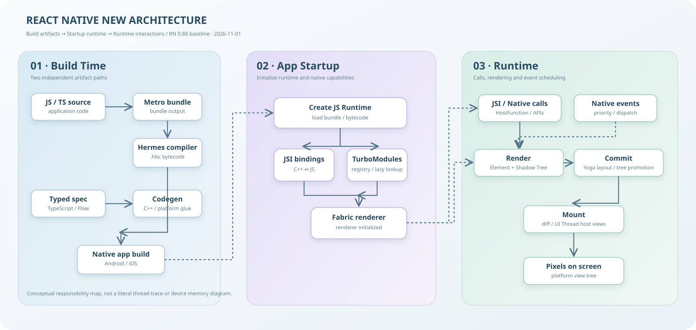

构建产物
Hermes 字节码、Codegen 生成接口、Native 工程构建。
学习构建阶段 ↗以 React Native 0.88 为基线，贯通 Build → Startup → Runtime：Hermes、JSI、TurboModules / Codegen、Fabric、线程与事件调度。
沿 Build → Startup → Runtime 追踪代码、类型契约、C++ 渲染树、线程与平台视图如何协作。

flowchart LR
subgraph B["Build Time"]
JS["JS / TS source"] --> Metro["Metro bundle"] --> Hermes["Hermes compiler / .hbc"]
Spec["Typed Native spec"] --> Codegen["Codegen"] --> Glue["C++ glue + platform interfaces"]
Hermes --> App["Native app build"]
Glue --> App
end
subgraph S["Startup"]
App --> Runtime["Create JS Runtime"]
Runtime --> JSI["Install JSI bindings"]
Runtime --> Registry["TurboModule Registry"]
Runtime --> Fabric["Initialize Fabric renderer"]
end
subgraph R["Runtime"]
JSI --> Calls["JS ↔ C++ ↔ Native"]
Registry --> Calls
Fabric --> Render["Render"]
Render --> Shadow["Shadow Tree"]
Shadow --> Commit["Commit + Yoga layout"]
Commit --> Mount["Mount / tree diff"]
Mount --> Host["Host Views on UI Thread"]
Host --> Pixels["Pixels"]
Events["Native events"] --> Dispatch["Event priority / dispatch"] --> Render
end
Hermes 字节码、Codegen 生成接口、Native 工程构建。
学习构建阶段 ↗JS Runtime、JSI 绑定、TurboModule Registry 与 Fabric 初始化。
理解 JSI ↗Native 调用、Render / Commit / Mount、线程与事件优先级。
理解 Fabric ↗以官方 0.88 版本和 New Architecture 概念文档校准。
把 Hermes 编译、Codegen、Runtime 初始化与运行期渲染分到正确阶段。
系统课程把模块调用、UI 渲染、Native 事件和线程资源放在同一模型里。
系统课程理解 Runtime、HostFunction、HostObject 与 Bridgeless 的真实边界。
系统课程把 spec、生成代码、平台实现和模块注册拆成可审查的工程链路。
系统课程从 React Element Tree 追到 C++ Shadow Tree，再到平台 Host Views。
系统课程理解 JavaScript Thread、UI Thread 和高优先级事件如何共同维护响应性。
系统课程以当前稳定版本为时间锚点，区分架构里程碑与近年版本演进。
系统课程保留原有专题讨论线索，与当前官方内容分层阅读。
历史资料同一个知识领域同时拥有理解、感受和运用的入口。
Release Overview · Architecture Overview · Codegen · Render Pipeline · Threading Model
版本基准：2026-11-01；后续更新课程时应重新核验。